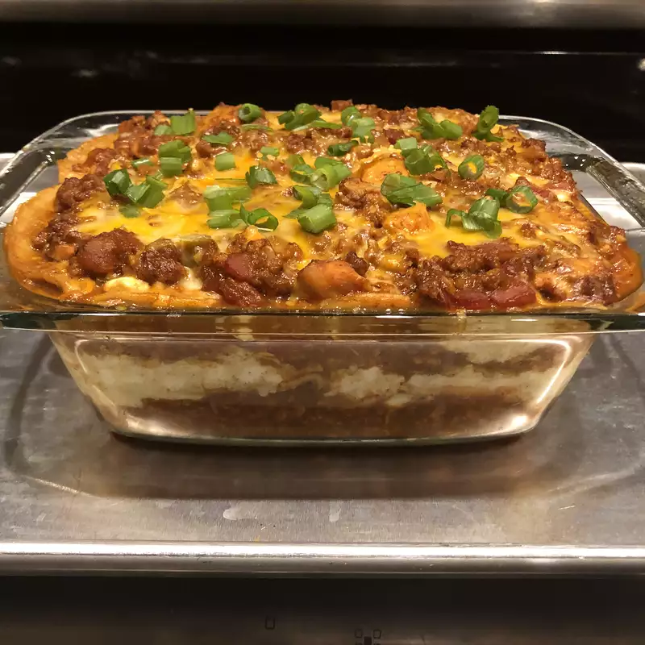

lasagna

FRESHLY BAKED LASAGNA
Scrumptious lasagna with basil pesto, spinach and plenty of bubbly cheese.
Ingredients
- 1 tablespoon vegetable oil
- 1 onion, chopped
- 3 cloves garlic, chopped
- 1 (28 ounce) can enchilada sauce
- 1 (14.5 ounce) can diced tomatoes with lime juice and cilantro
- 1 (16 ounce) package small-curd cottage cheese
- 2 cups shredded Mexican cheese blend
- Heat oil in a large pot over medium heat. Add onion and garlic; cook and stir until onion is translucent, about 5 minutes. Stir in ground turkey; cook until no longer pink, about 5 minutes. Drain excess grease.
- Stir enchilada sauce and diced tomatoes into the pot. Simmer until flavors combine, about 20 minutes. Remove from heat.
- Bake in the preheated oven until bubbly, about 30 minutes. Remove aluminum foil and continue baking until top is browned, about 15 minutes. Cool for 15 minutes before serving. Garnish with green onion.